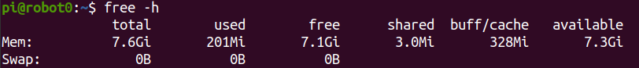
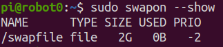
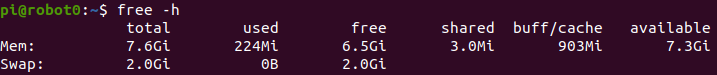

Robot Setup
Contents
Robot Setup¶
This guide will walk through the steps to install Ubuntu Server 20.04 LTS, ROS Noetic, and all dependencies on a Raspberry Pi 4 B. This Pi is then embedded within Texas Instrument’s Robotics System Learning Kit MAX (TI RSLK Max) along with an RPLIDAR A1, UM7 Orientation Sensor, and a USB Camera. The robotics system, USAFABot, is utilized in the United States Air Force Academy’s Electrical and Computer Engineering department to teach undergraduate students robotics. You can follow the below steps or a Raspberry Pi image can be provided by emailing Steven Beyer.
Hardware¶
Below is a list of recommended hardware and links. Other off-the-shelf components can replace the ones below.
Raspberry Pi 4 Model B (preferably with 8 GB of RAM))
128 GB High Speed MicroSD card
MicroSD card reader
Monitor, mouse, and keyboard
USB Camera (Any USB Cam will work, this is the one we use)
Three short USB to micro USB cables
Chassis¶
Camera¶
Raspberry Pi¶
Voltage Regulator and Power Cutoff Circuits¶
LIDAR¶
UM7¶
Software¶
Download Ubuntu and flash MicroSD card¶
There are multiple ways to download and install Ubuntu 20 to a MicroSD card, but the Raspberry Pi Imager is one of the easiest. Instructions for installing the imager on your operating system can be found on the Raspberry Pi OS software page.
Once installed, start the imager and select the “CHOOSE OS” button.
Scroll down the menu and select “Other general purpose OS”.

Next, select “Ubuntu”.

Lastly, scroll and select the latest 64-bit version of “Ubuntu Server 20.04 LTS”.

Now that you have the correct image selected, you need to choose the correct storage device that corresponds to the MicroSD card. Select “CHOOSE STORAGE”.
⚠️ Warning: This process will overwrite the drive, so ensure you select the correct device! You can select “CHOOSE STORAGE” before inserting the MicroSD card, then insert it, and the card will be the new drive that pops up.
Once you are sure the correct drive is selected, click “WRITE”.
Once complete you should have an Ubuntu SD card! Ensure your Raspberry Pi is powered off, connected to a monitor, keyboard, and mouse, and insert the SD card.
Ubuntu Setup¶
Login and changing password¶
Once Ubuntu boots up you will be prompted to enter the login and password. It may take a few minutes on first boot to configure the default username and password, so if login fails, try again after a few minutes. The default username is ubuntu and password is ubuntu.
On first login, you will be prompted to change the password. Enter the current password, ubuntu, and then enter a new password twice.
Changing username (optional)¶
I like to change the username to “pi” so I remember that this machine is a Raspberry Pi. This is optional and you can change the username to anything you like.
First, add a temp user:
sudo adduser temp
Enter an easy to remember password, and then hit enter until you are back at the terminal prompt.
Add the temp user to the sudo group:
sudo adduser temp sudo
Log out of ubuntu user:
exit
Login to temp user account.
Change the ubuntu username to the new username:
sudo usermod -l newUsername ubuntu
sudo usermod -d /home/newHomeDir -m newUsername
For example:
sudo usermod -l pi ubuntu
sudo suermod -d /home/pi -m pi
Log out of temp user and log in with new username and password (the password is still the same as the password you set for the ubuntu user).
Delete the temp user:
sudo deluser temp
sudo rm -r /home/temp
Now at the terminal prompt you should see pi@ubuntu: and if you type pwd you should see /home/pi (with pi replaced with the username you chose).
Change hostname¶
If you have multiple robots on your network it is good to give each a unique hostname. We number each robot from 0-n and each robot has a corresponding hostname (e.g., robot0).
Change the hostname with the command line editor of your choice.
sudo nano /etc/hostname
Replace ubuntu with the hostname of choice, such as robot0. Save and exit.
The new hostname will not take effect until reboot. Don’t reboot yet, though! We have a couple more things to accomplish before reboot.
Set up Wi-Fi¶
Until a desktop GUI is installed we have to work with the command line to set up the Wi-Fi. This is the most reliable method I have found and we will delete these changes once a GUI is installed.
First, determine the name of your Wi-Fi network adapter by typing ip link (for the Raspberry Pi version of Ubuntu Server 20.04 LTS it is typically wlan0).
Open the /etc/netplan/50-cloud-init.yaml file in your favorite browser:
sudo nano /etc/netplan/50-cloud-init.yaml
Edit the file so it looks like the below (use spaces and not tabs) replacing wlan0 with your wireless network interface and using your SSID and password:
Save and exit.
Disable Automatic Updates¶
Ubuntu will attempt to apply system updates in the background. This has caused issues in the past with ROS dependencies and keys. Disabling automatic updates allows you to control when Ubuntu installs updates. While this is not a good habit for general computer security, it is fine for this application of an embedded robotics system. Ensure you periodically update and upgrade your system.
Open the auto updater configuration file using sudoedit:
sudoedit /etc/apt/apt.conf.d/20auto-upgrades
Change the content from:
APT::Periodic::Update-Package-Lists "1";
APT::Periodic::Unattended-Upgrade "1";
to:
APT::Periodic::Update-Package-Lists "0";
APT::Periodic::Unattended-Upgrade "0";
APT::Periodic::AutocleanInterval "0";
APT::Periodic::Download-Upgradeable-Packages "0";
Enable SSH and generate new keys¶
sudo ssh-keygen -A
sudo systemctl start ssh
Add Swap Space (optional)¶
The Raspberry Pi 4 B used in our course has 8 GB of RAM. Swap Space might not be necessary, but with a larger SD card it is beneficial.
You can check that there is no active swap using the free utility: 
The fallocate program can be used to create a swap:
sudo fallocate -l 2G /swapfile
If it was created correctly, you should see the below:

Make the file only accessible to root by typing:
sudo chmod 600 /swapfile
Verify the permissions by typing the following:

Now only root user has read and write flags enabled.
You can set the file as swap space by typing the following:

Then turn on the swap file:
sudo swapon /swapfile
To verify that this worked you can type the following: 
This swap will only last until reboot, so to make it permanent at it to the fstab file:
echo '/swapfile none swap sw 0 0' | sudo tee -a /etc/fstab
Now it is time to reboot by typing sudo reboot!
Verify changes¶
After reboot and you log in your new hostname should be listed at the terminal (e.g., pi@robot0). Additionally, you should be connected to Wi-Fi and have an IP Address. You can confirm by typing the following and observing the IP address in the output:

You can now use this IP address to create a remote secure shell into the USAFABot using either the IP address or hostname if your network provides Dynamic DNS. From another machine connected to your network type one of the following:
ssh username@IP_ADDRESS
or
ssh username@HOSTNAME
Lastly, ensure your swap space is still active by typing the following and observing the output:

Update and Upgrade¶
Since we turned off automatic updates, you should periodically update and upgrade. You can use this single command to accomplish both while accepting all upgrades:
sudo apt update && sudo apt -y upgrade
Install Ubuntu Desktop (optional)¶
A desktop GUI is not necessary for a remote machine like the USAFABot and will take up about 1.4 GB of RAM to run. I include directions for installing the Ubuntu GNOME 3 desktop environment for completeness and flexibility. The following will install the environment while confirming the installation:
sudo apt -y install ubuntu-desktop
Network Settings¶
If you do install the Ubuntu Desktop and want to use the GUI to setup the Wi-Fi network then you need to remove the settings included in the /etc/netplan/50-cloud-init.yaml file. It should look like the original file when complete:
You can now use the GUI interface in the top right of the screen to set up a Wi-Fi connection.
Setup GitHub SSH Keys¶
The following assumes you already have a GitHub account.
Create SSH keys to use with your GitHub account by typing the following using the same email as you GitHub login:
cd
ssh-keygen -t ed25519 -C "github@email.com"
When prompted to “Enter a file in which to save the key”, hit enter.
At the prompt, type a secure password.
Start the ssh-agent in the background and add your SSH private key to the ssh-agent:
eval "$(ssh-agent -s)"
ssh-add ~/.ssh/id_ed25519
Open the public key with your favorite command line editor (this is easier to accomplish via an SSH connection from a desktop machine with a GUI so you can copy the public key to your GitHub account).
nano ~/.ssh/id_ed25519.pub
Copy the contents of the file (maximize the window and ensure you copy the entire contents up to the GitHub email).
Open a web browser and sign in to your GitHub account.
In the upper-right corner of any page, click your profile photo, then click Settings:

In the user settings sidebar, click SSH and GPG keys:

Click New SSH key:

In the “Title” field, add a descriptive label for the new key, such as “robot0”.
Paste your key into the “Key” field (contents of the .pub file).
Click Add SSH key.
Update Alternatives¶
Python3 is installed in Ubuntu20 by default. Some ROS packages utilize the “python” command instead of “python3” so we need to create a new executable, “/usr/bin/python” that will call the Python3 (basically use the command “python” to call Python3):
sudo update-alternatives --install /usr/bin/python python /usr/bin/python3 10
ROS Noetic¶
At this point, the Ubuntu environment is setup. Now we will setup the ROS requirements for the USAFABot. All of these instructions are adapted from the ROS wiki. ROS Noetic is the latest version of ROS 1 that supports Ubuntu Focal.
Installation¶
Accept software from packages.ros.org:
sudo sh -c 'echo "deb http://packages.ros.org/ros/ubuntu $(lsb_release -sc) main" > /etc/apt/sources.list.d/ros-latest.list'
Set up keys:
sudo apt install curl # if you haven't already installed curl
curl -s https://raw.githubusercontent.com/ros/rosdistro/master/ros.asc | sudo apt-key add -
Install ROS Noetic:
sudo apt update
sudo apt -y install ros-noetic-ros-base
The base version provides the Bare Bones of ROS to include minimum packaging, build, and communications libraries. No GUI tools are installed. As the Raspberry Pi is embedded into the USAFABot it is ideal to keep overhead as low as possible. Many of the GUI tools will be ran on the main machine.
Install ROS dependencies for building packages:
sudo apt install python3-rosdep python3-rosinstall python3-rosinstall-generator python3-wstool python3-pip build-essential
Initialize rosdep
sudo rosdep init
rosdep update
Source the ROS setup file:
source /opt/ros/noetic/setup.bash
Create your ROS workspace:
mkdir -p ~/catkin_ws/src
cd ~/catkin_ws/
catkin_make
Setup ROS environment variables and setup scripts within the ~/.bashrc file. Open the ~/.bashrc file with your favorite command line editor and add the following to the bottom:
source /opt/ros/noetic/setup.bash
source ~/catkin_ws/devel/setup.bash
export ROS_PACKAGE_PATH=~/catkin_ws/src:/opt/ros/noetic/share
export ROS_HOSTNAME=`hostname` # note these are backticks, not apostrophes
export ROS_MASTER_URI=http://MASTER_IP:11311 # replace "MASTER_IP" with IP address/hostname of your master
Any time you make changes to your ~/.bashrc file you must source it:
source ~/.bashrc
Dependencies¶
There are a number of ROS packages required to operate the USAFABot. Some of these can be installed using apt install and others have to be installed from source. Change directories to your source folder and follow the below steps to install each dependency.
cd ~/catkin_ws/src
USAFABot¶
git clone git@github.com:AF-ROBOTICS/usafabot.git
The usafabot_curriculum package includes all dependencies needed to run the USAFABot nodes. We can automatically install these dependencies using the ROSDEP tool:
cd ~/catkin_ws
rosdep install --from-paths src --ignore-src -r -y
This will take a while.
Now we can make and source our workspace:
cd ~/catkin_ws
catkin_make
source ~/.bashrc
The last set of dependencies we need to install are Python dependencies. These are listed within our usafabot_curriculum package and can be installed using the pip3 tool:
roscd usafabot_curriculum
pip3 install -r requirements.txt
📝️ Note: the “dlib” package will take quite a while to install.
TI-RSLK MAX Software¶
The last software install necessary is to flash the MSP-432 Microcontroller on the TI-RSLK MAX. The TI-RSLK MAX robotics system is first utilized in USAFA’s Embedded Systems I course. Through the adoption of Texas Instruments’ Robotics System Learning Kit Max curriculum, the course transitioned to a flipped classroom format and project-based learning model. Adapting TI’s curriculum, the course now features eighteen hands-on laboratories and culminates in a maze competition. In this course, students first learn to interact with the hardware of the robotics testbed using the assembly and C coding languages. The control code for the TI-RSLK MAX was adapted from this course and the work of Jonathan Valvano. If you would like to learn more, please see the link above.
To flash the TI-RSLK MAX, Texas Instrument’s Code Composer Studio software, needs to be downloaded. An installation guide is provided by TI as part of the RSLK Curriculum and should be installed on a separte computer (We recommend using a Windows machine, as it has the most support from Texas Instruments).
📝️ Note: When selecting a project to import in Step 6 select the control folder within the usafabot package.
When complete, follow steps on Page 8 for “Running code on the LaunchPad using CCS” to flash the usafabot_serial/usafabot.c program.
Updates to the control can be made within the usafabot_serial/usafabot.c file.
Master Setup¶
This guide will walk through the steps to install Ubuntu Desktop 20.04 LTS, ROS Noetic, and all dependencies on a desktop computer. This computer system is utilized in the United States Air Force Academy’s Electrical and Computer Engineering department in an embedded network with the ground robot, USAFABot. The master system is used to host roscore, utilize ROS GUI tools, and create secure connections with the USAFABot.
You must open this file as a Jupyter Notebook (link below) to run code
Run this file as an executable Jupyter Notebook
Hardware¶
For our application, we are using Intel NUC Kits but these instructions will work on any AMD64 architecture.
Software¶
Download Ubuntu and flash USB¶
For the desktop machine you will first need to download Ubuntu Desktop 20.04 LTS.
Once download, follow the instructions to create a bootable Ubuntu USB stick within Ubuntu. The guide provides links to create USB sticks from Windows and macOS as well.
Once the bootable USB stick is created, follow the guide to Install Ubuntu desktop selecting a useful computer name such as master0. The NUC requires you to press and hold F10 on startup to boot from a USB stick.
Setup GitHub SSH Keys¶
The following assumes you already have a GitHub account.
Create SSH keys to use with your GitHub account by typing the following using the same email as you GitHub login:
cd
ssh-keygen -t ed25519 -C "github@email.com"
When prompted to “Enter a file in which to save the key”, hit enter.
At the prompt, type a secure password.
Start the ssh-agent in the background and add your SSH private key to the ssh-agent:
eval "$(ssh-agent -s)"
ssh-add ~/.ssh/id_ed25519
Open the public key with your favorite command line editor (this is easier to accomplish via an SSH connection from a desktop machine with a GUI so you can copy the public key to your GitHub account).
nano ~/.ssh/id_ed25519.pub
Copy the contents of the file (maximize the window and ensure you copy the entire contents up to the GitHub email).
Open a web browser and sign in to your GitHub account.
In the upper-right corner of any page, click your profile photo, then click Settings:
In the user settings sidebar, click SSH and GPG keys:
Click New SSH key:
In the “Title” field, add a descriptive label for the new key, such as “master0”.
Paste your key into the “Key” field (contents of the .pub file).
Click Add SSH key.
Update Alternatives¶
Python3 is installed in Ubuntu20 by default. Some ROS packages utilize the “python” command instead of “python3” so we need to create a new executable, “/usr/bin/python” that will call the Python3 (basically use the command “python” to call Python3):
sudo update-alternatives --install /usr/bin/python python /usr/bin/python3 10
Additional Software¶
sudo apt install jupyter-notebook
ROS Noetic¶
At this point, the Ubuntu environment is setup. Now we will setup the ROS requirements for the master. All of these instructions are adapted from the ROS wiki. ROS Noetic is the latest version of ROS 1 that supports Ubuntu Focal.
Installation¶
Accept software from packages.ros.org:
sudo sh -c 'echo "deb http://packages.ros.org/ros/ubuntu $(lsb_release -sc) main" > /etc/apt/sources.list.d/ros-latest.list'
Set up keys:
sudo apt install curl # if you haven't already installed curl
curl -s https://raw.githubusercontent.com/ros/rosdistro/master/ros.asc | sudo apt-key add -
Install ROS Noetic:
sudo apt update
sudo apt -y install ros-noetic-desktop-full
The full version provides theminimum packaging, build, communications libraries, GUI tools, and 2D/3D simulation and perception packages.
Install ROS dependencies for building packages:
sudo apt -y install python3-rosdep python3-rosinstall python3-rosinstall-generator python3-wstool python3-pip xterm build-essential
Initialize rosdep
sudo rosdep init
rosdep update
Source the ROS setup file:
source /opt/ros/noetic/setup.bash
Create your ROS workspace:
mkdir -p ~/catkin_ws/src
cd ~/catkin_ws/
catkin_make
Setup ROS environment variables and setup scripts within the ~/.bashrc file. Open the ~/.bashrc file with your favorite command line editor and add the following to the bottom:
source /opt/ros/noetic/setup.bash
source ~/catkin_ws/devel/setup.bash
export ROS_PACKAGE_PATH=~/catkin_ws/src:/opt/ros/noetic/share
export ROS_HOSTNAME=`hostname` # note these are backticks, not apostrophes
export ROS_MASTER_URI=http://MASTER_IP:11311 # replace "MASTER_IP" with IP address/hostname of your master
Any time you make changes to your ~/.bashrc file you must source it:
source ~/.bashrc
Dependencies¶
There are a number of ROS packages required to operate the USAFABot. To ensure ROS message compatibility you will want all of these libraries to be downloaded on your desktop as well. Some of these can be installed using apt install and others have to be installed from source. Change directories to your source folder and follow the below steps to install each dependency.
cd ~/catkin_ws/src
USAFABot¶
git clone git@github.com:AF-ROBOTICS/usafabot.git
The usafabot_curriculum package includes all dependencies needed to run the USAFABot nodes. We can automatically install these dependencies using the ROSDEP tool:
cd ~/catkin_ws
rosdep install --from-paths src --ignore-src -r -y
This will take a while.
Now we can make and source our workspace:
cd ~/catkin_ws
catkin_make
source ~/.bashrc
The last set of dependencies we need to install are Python dependencies. These are listed within our usafabot_curriculum package and can be installed using the pip3 tool:
roscd usafabot_curriculum
pip3 install -r requirements.txt
📝️ Note: the “dlib” package will take quite a while to install.